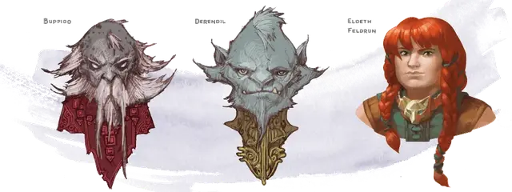

Баппидо
Buppido
Маленький Гуманоид, хаотично-злой, именной НИП

Класс Доспеха 13 (кожаный доспех)
Хиты 13 (3к6 + 3)
Скорость 30 футов
| мод | спас | ||
|---|---|---|---|
| СИЛ | 9 | −1 | −1 |
| ЛОВ | 14 | +2 | +2 |
| ТЕЛ | 12 | +1 | +1 |
| мод | спас | ||
|---|---|---|---|
| ИНТ | 11 | +0 | +0 |
| МДР | 5 | −3 | −3 |
| ХАР | 9 | −1 | −1 |
Навыки Скрытность +4
Чувства тёмное зрение 120 футов, пассивное Восприятие 7
Языки Дварфийский, Подземный
Опасность 1/4 (50 опыта)
Бонус мастерства +2
Особенности
Безумие. Баппидо обладает преимуществом на спасброски против очарования и страха.
Сопротивление магии. Баппидо совершает с преимуществом спасброски от заклинаний и прочих магических эффектов.
Чувствительность к солнечному свету. Баппидо совершает с помехой броски атаки и проверки Мудрости (Восприятие), основанные на зрении, находясь на солнечном свете.
Действия
Короткое копье с крюком. Рукопашная атака оружием: +2 к попаданию, досягаемость 5 фт., одна цель. Попадание: Колющий урон 1 (1к4 - 1). Если цель является существом, дерро может вместо нанесения урона опрокинуть ее, и в этом случае цель должна совершить успешный спасбросок Силы Сл 9 или упадет ничком.
Легкий многозарядный арбалет. Дальнобойная атака оружием: +4 к попаданию, дистанция 40/160 фт., одна цель. Попадание: Колющий урон 6 (1к8 + 2).
Описание
Разговорчивый и хитрый дерро.